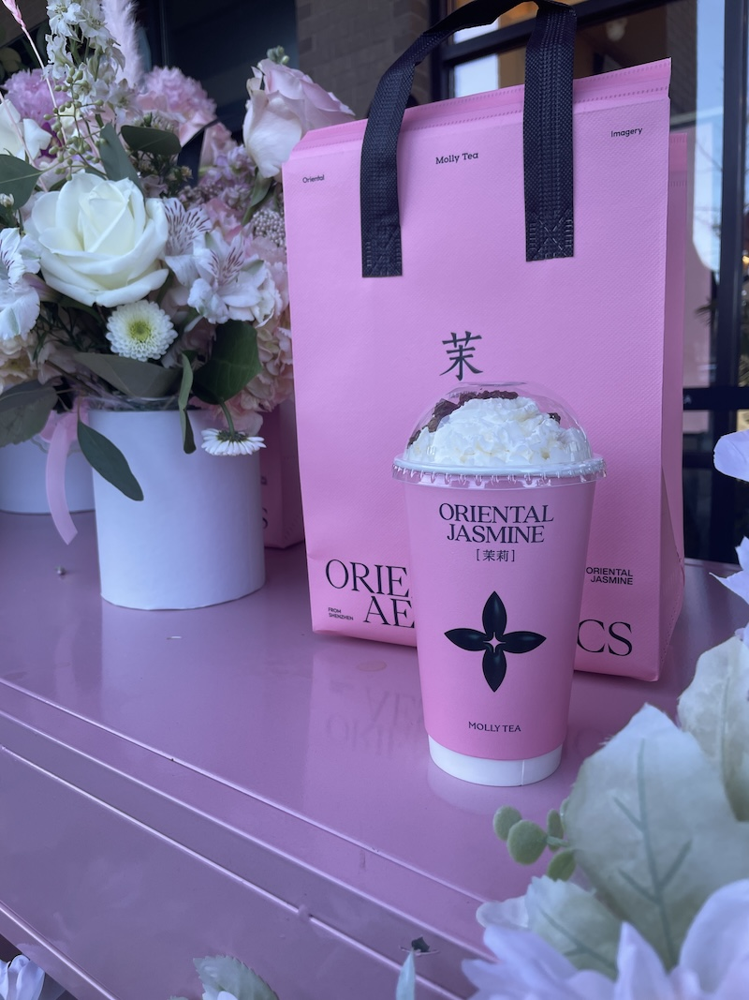
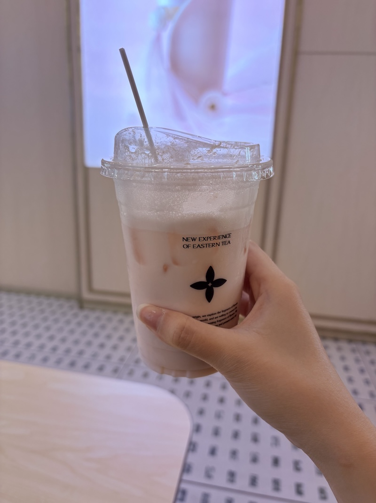

Type: 🧋 Milk Tea
Address: 6035 Peachtree Rd C108, Atlanta, GA 30360
Hours: 11:00 AM – 10:00 PM from Monday through Thursday. 11:00 AM – 11:00 PM from Friday through Sunday.

My go-to order is the Premium Jasmine Apple Milk Tea — a refreshing blend of fragrant jasmine tea, sweet apple, and creamy milk. The apple adds a bright, fruity note that balances the floral jasmine perfectly. It is a bit sweet even though I lowered the sweetness level to 50%.
🌸 Jasmine tea is a green tea scented with jasmine blossoms, giving it a delicate floral aroma that's both calming and refreshing.
It's my go-to when I want something light, fruity, and not too sweet.
📝 Note: They also serve some light snacks, but I haven't tried them yet.
© 2026 Duluth Drinks Guide